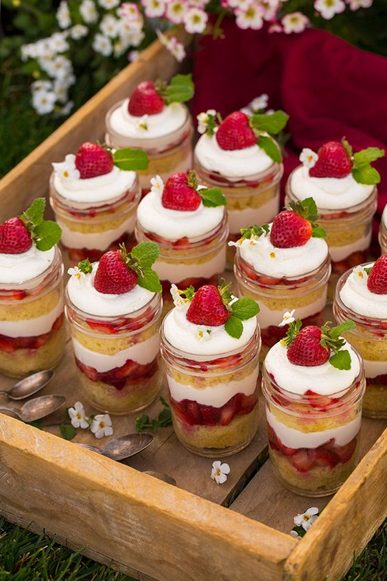
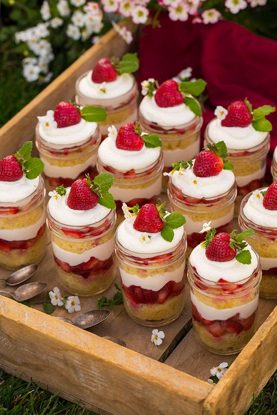

Os cupcakes são uma opção válida para agradar a todos na hora da sobremesa de Natal e, pensando nisso, inspirámo-nos para criar estes cupcakes de Natal de chocolate.
 prepraro
60min
prepraro
60min
 dificuldade
fácil
dificuldade
fácil
 rendimento
6 unidades
rendimento
6 unidades
Para preparar estes deliciosos cupcakes comece por fazer a massa: misture todos os ingredientes secos em uma tigela e reserve.
Em outra tigela bata a manteiga com o açúcar até obter um creme esbranquiçado e leve. Acrescente os ovos e o extrato de baunilha e volte a bater muito bem.
Pouco a pouco, e enquanto bate, acrescente o ingredientes secos à mistura anterior, alternando com o creme azedo. O resultado final deverá ser uma massa meio pesada e homogênea.
Divida a massa dos cupcakes por forminhas de cupcake encaixadas em um tabuleiro de cupcakes, porém sem encher até ao topo. Leve a assar no forno preaquecido a 180ºC por 20-25 minutos.
Enquanto isso prepare a cobertura dos cupcakes de chocolate: misture em uma tigela o cauca em pó e o açucar de confeiteiro.
Numa tigela grande bata a manteiga com a batedeira até que vire uma pasta. Gradualmente acrescente os ingredientes anteriores alternando com o leite evaporado, e sem deixar de mexer. Acrescente o extrato e bata até obter um creme leve e suave. Reserve por uns 10-15 minutos na geladeira.
Quando os cupcakes estiverem assados e frios, decore-os com a cobertura de chocolate usando um saco de confeiteiro, e acrescente os confeitos. Delicie todo o mundo com este cupcake de Natal, e diga-nos qual sua opinião. Bom apetite!


Este bolo é realmente incrível. Tem um sabor refinado das especiarias e do toque de conhaque. Faz o maior sucesso nas festas de fim de ano.
prepraro
1h e 30min
dificuldade
médio
rendimento
700g aprox.
Pré-aqueça o forno a 180 ºC (temperatura média). Unte com manteiga uma fôrma com furo no meio de 22 cm de diâmetro. Polvilhe com farinha e chacoalhe bem para espalhar. Bata sobre a pia para retirar o excesso de farinha e reserve.
Numa tábua, pique fino as nozes. Pique a ameixa seca em cubinhos e transfira para uma tigela. Junte as uvas-passas e regue com o conhaque. Deixe de molho enquanto prepara os outros ingredientes.
Sobre uma tigela, passe a farinha de trigo por uma peneira. Junte o fermento, a canela, a noz-moscada, o cravo e as nozes picadas. Misture bem.
Na tigela da batedeira, coloque a manteiga e bata com a pá por cerca de 2 minutos, até ficar cremosa. Acrescente o açúcar e bata em velocidade média por cerca de 10 minutos, até formar um creme fofo. Numa tigela, quebre um ovo de cada vez e junte ao creme, batendo bem entre cada adição para incorporar.
Acrescente a mistura de secos em etapas e bata a cada adição apenas para misturar. Desligue e desencaixe a tigela da batedeira.
Sobre uma tigela, passe as ameixas e uvas-passas por uma peneira e reserve o conhaque. Junte as frutas secas à massa do bolo, adicione as frutas cristalizadas e misture delicadamente com uma espátula.
Transfira a massa para a fôrma untada e bata delicadamente sobre a bancada para nivelar. Leve ao forno e deixe assar por cerca de 35 minutos. Para saber se o bolo está assado, espete um palito na massa: se sair limpo é sinal que o bolo está pronto; caso contrário deixe assar por mais alguns minutos.
Assim que estiver assado, retire o bolo do forno e deixe esfriar por pelo menos 15 minutos antes de desenformar. Enquanto isso, passe os figos por uma peneira e deixe escorrer bem a calda. Corte cada um ao meio, no sentido do comprimento.
Desenforme e pincele toda a superfície do bolo com o conhaque reservado - o bolo morno absorve o conhaque e fica úmido e perfumado. Assim que estiver frio, decore como quiser e sirva a seguir.


Essa bebida é mundialmente conhecida por ser excelente para dias frios... Faça e se aqueça com essa delícia!!!
prepraro
10min
dificuldade
fácil
rendimento
4 porções
Em um liquidificador, bata o leite, o amido de milho, o chocolate em pó e o açúcar.
Despeje a mistura em uma panela com a canela e leve ao fogo baixo, mexendo sempre até ferver.
Desligue, adicione o creme de leite e mexa bem até obter uma mistura homogênea.
Retire a canela e sirva quente.


O natal já está chegando e é hora de começar a ver o que você vai fazer para deixar a sua ceia de natal mais gostosa e mais linda.
prepraro
1h a 3h
dificuldade
fácil
rendimento
500g aprox.
Misture a manteiga com a farinha.
Acrescente o açúcar, ovo, gema e a essência.
Misture bem até obter uma massa lisa.
Envolva essa massa em filme plástico e leve à geladeira por 30 minutos.
Abra a massa entre filmes com auxílio de um rolo na espessura de meio centímetro.
Corte com cortador de biscoito com desenho de sua preferência.
Coloque em forma (não precisa untar) e leve em forno preaquecido a 180°C por 10 minutos até corarem.
Fique de olho que assam bem rápido, cuidado para não queimar.
Espere esfriar.
Prepare o glacê real conforme instruções da embalagem.
Coloque corante, misture bem e coloque-os em saquinhos para confeitar.
Abuse da sua criatividade.
Deixe secar por 2 horas para depois colocar em potes ou embalar em saquinhos para presentear.


No Natal os doces não podem faltar, e um dos que mais chama as atenções é o pavê. Poucos resistem a esta delícia. Confira o passo a passo da receita pavê de Natal e delicie todos nesta festa!
prepraro
4h aprox.
dificuldade
fácil
rendimento
8 porções
Para preparar seu pavê de Natal especial comece pelo creme branco. Para isso coloque em uma panela o leite condensado, o leite com a maisena dissolvida nele e a essência de Panetone ou de baunilha, que irá conferir um toque bem gostoso! Leve ao fogo baixo e fique mexendo sem parar até engrossar. Depois desligue e deixe esfriar.
Misture em uma tigela o rum com as 2 xícaras de leite e umedeça alguns biscoitos nesse líquido. Coloque os biscoitos umedecidos em um refratário de vidro, de modo a ocupar todo o fundo.
Monte o pavê de Natal: coloque sobre os biscoitos algumas raspas de chocolate, algumas cerejas picadas (ou fruta escolhida) e uma camada do creme branco. Repita as camadas de biscoito, chocolate, cereja e creme até terminar o creme.
Decore a última camada do seu pavê de Natal com as restantes raspas de chocolate e cerejas, que podem ser inteiras. Leve à geladeira por, no mínimo, 3 horas, para ganhar consistência. Sirva, bom apetite e feliz Natal!


O Bolo Chocolatudo é sinônimo de tudo que há de mais gostoso no mundo das confeitarias... Faça e impressione a todos com essa maravilha!!!!
prepraro
4h aprox.
dificuldade
médio
rendimento
2kg aprox.
Bata os ovos e o açúcar na batedeira até obter um creme.
Peneire a farinha de trigo e misture delicadamente com um fouet.
Acrescente Chocolate em pó 50%
Unte uma forma aro 15 e despeje a massa.
Asse em forno pré-aquecido a 180ºC por aproximadamente 20 minutos.
Em uma panela sem aquecer coloque 400g de leite condensado, creme de leite e Chocolate em pó.
Mexa bem até perceber que os flocos começaram a se dissolver
Leve tudo ao fogo baixo, sem parar de mexer até começar a engrossar e atingir ponto de recheio.
Passe para um prato untado e deixe esfriar por 2 horas
Assim que o Brigadeiro estiver Frio acrescente o Chantilly de Chocolate batido e reserve.
Separe 150g de recheio de Brigadeiro e reserve
Corte o Bolo em 3 partes
Regue com calda de sua preferência e espalhe uma parte do recheio brigadeiro.
Coloque por cima do recheio de brigadeiro um disco de bolo regue com a calda novamente e espalhe o recheio de brigadeiro
Derreta a ganache até que esteja totalmente fluida lembrando que não pode ultrapassar a temperatura de 40°C.
Espalhe a ganache no topo do bolo e deixa escorrer pelas laterais.
Coloque as 150g do recheio de brigadeiro dentro de uma manga com um bico 1m.
Faça pitangas em todo o topo do bolo ou decore como desejar.

Sabe aquele bolinho frito que pode fazer o maior sucesso aí na sua casa? O americaníssimo donuts americano! Confira a nossa receita de donuts americanos mais caprichada!
prepraro
60min
dificuldade
fácil
rendimento
15 porções
Quebrar os ovos em um copo de medida e completar com o leite até a marca de 250 ml.
Misturar a margarina, o açúcar, a farinha e o fermento e sovar a massa.
Deixar em repouso por cerca de 15 minutos.
Abrir a massa com a ajuda de um rolo e cortar as rosquinhas usando 2 copos de tamanhos diferentes (eu usei 1 copo americano e 1 copo de cachaça).
Fritar as rosquinhas em óleo morno até ficarem douradinhas por fora.
Depois de esfriar, cortar ao meio com cuidado e rechear com doce de leite (eu fiz o doce de leite cozinhando o leite condensado na panela de pressão, fica perfeito)!
Cobertura:
Derreter o chocolate em banho-maria e mergulhar um lado das rosquinhas.
Junte o fermento, a farinha, o leite e o açúcar (os primeiros ingredientes da lista)
Misture e reserve até dobrar de tamanho
Junte essa mistura à farinha de trigo (259 g)
Misture
Junte o ovo, a essência, o sal, o leite e a margarina
Misture muito bem novamente e reserve até a massa dobrar de tamanho
Corte a massa no formato dos donuts, frite em óleo quente e recheie como quiser
Você pode usar coberturas e recheios a gosto!
Essa receita Bolo de frutas vermelhas fica maravilhosa. Esse bolo fica perfeito como bolo de aniversário ou sobremesa em qualquer ocasião.
prepraro
2h aprox.
dificuldade
medio
rendimento
2kg aprox.
Bata as claras em neve e reserve.
Bata as gemas com o açúcar, junte a essência de baunilha, a farinha, o leite, o fermento e por último as claras misturando delicadamente.
Unte uma forma redonda e leve ao forno à 180ºC por 35 minutos ou até dourar.
Coloque todos os ingredientes numa panela (menos o chantilly) e leve ao fogo.
Mexa em fogo médio até ferver e engrossar. Deixe esfriar.
Na batedeira bata o chantilly líquido gelado até dobrar de volume e ficar com consistência de chantilly.
Adicione o creme no chantilly e bata até misturar.
Separe algumas frutas para decorar o topo do bolo.
Em uma panela, misture todas as frutas (morangos, amoras, framboesas, mirtilos) com a água e o açúcar, e coloque em fogo médio.
Mexa enquanto as frutas soltam as águas e o açúcar derreta.
Assim que ficar com aparência de geleia, desligue o fogo e reserve.
Corte a massa em três partes.
Disponha a primeira parte num prato para bolos.
Coloque uma camada de creme de baunilha e uma fina camada da calda de frutas.
Repita esse processo com a segunda camada da massa.
Por fim, coloque a terceira camada.
Coloque o restante do creme e decore com frutas vermelhas.
 

Bolo de cenoura fica macio, bem fofinho, no ponto para receber a calda de chocolate.
prepraro
60min
dificuldade
fácil
rendimento
15 porções
Pré-aqueça o forno a 180 ºC (temperatura média). Unte com manteiga uma fôrma retangular de 30 cm x 20 cm e 5 cm de altura. Polvilhe com farinha de trigo, chacoalhe e bata sobre a pia para tirar o excesso.
Numa tigela, coloque a farinha, o sal e o fermento, passando pela peneira. Misture e reserve.
Lave e descasque as cenouras. Descarte a ponta da rama, corte as cenouras em rodelas e transfira para o liquidificador.
Junte o óleo às cenouras cortadas. Numa tigela pequena, quebre um ovo de cada vez e transfira para o liquidificador – se um estiver estragado, você não perde a receita. Acrescente o açúcar e bata bem até ficar liso, por cerca de 5 minutos.
Transfira a mistura líquida para uma tigela grande e adicione aos poucos os ingredientes secos, misturando delicadamente com um batedor de arame para incorporar.
Com cuidado, transfira a massa para a fôrma e leve ao forno para assar por cerca de 45 minutos. Para saber se o bolo está pronto, espete um palito na massa: se sair limpo, pode tirar do forno; caso contrário, deixe por mais alguns minutos, até assar completamente. Deixe esfriar por 15 minutos antes de preparar a cobertura.
Numa panela pequena junte o chocolate, o açúcar, a manteiga e a água. Leve ao fogo alto e mexa com o batedor de arame até ferver.
Depois que começar a ferver, mexa por mais 3 minutos, até a calda engrossar e desgrudar do fundo da panela. Regue a calda quente imediatamente sobre o bolo morno (ou frio) e espalhe com uma espátula para cobrir toda a superfície. Deixe a calda esfriar completamente e cristalizar antes de servir.